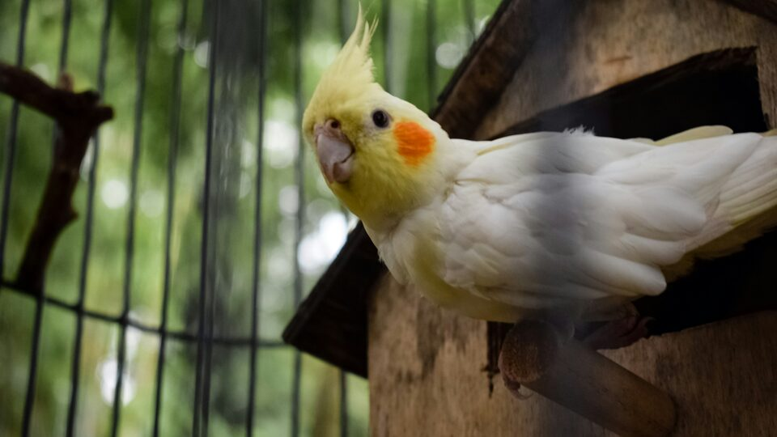

DICA 01
Uma personalidade grande merece um lar adequado
Se você já teve a sorte de conviver com uma calopsita, sabe que apesar de pequenas, elas possuem uma personalidade gigante. Por isso, ao escolher o lar da sua nova amiga, leve em consideração quanto espaço ela terá para se divertir.
As gaiolas devem ser grandes o suficiente para que ela possa se exercitar, brincar ou até mesmo realizar pequenos voos. Se você está se perguntando qual o tamanho ideal, a regra é uma só: quanto maior, melhor.
Mesmo em apartamento, invista em uma gaiola grande. É o que oferece mais qualidade de vida ao pet.